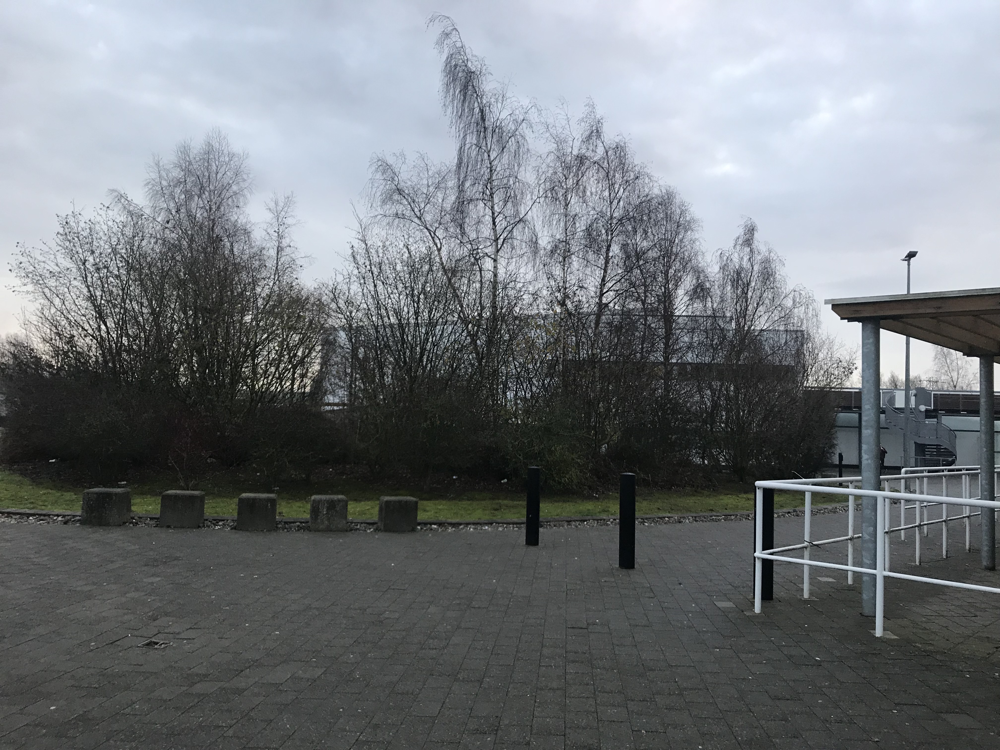
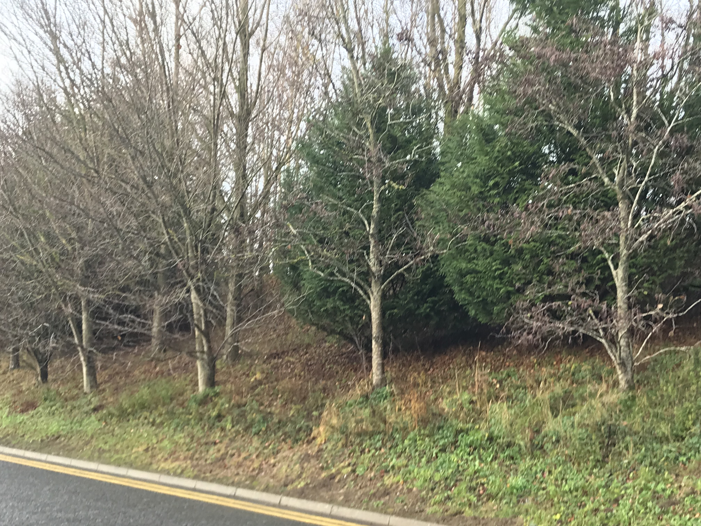
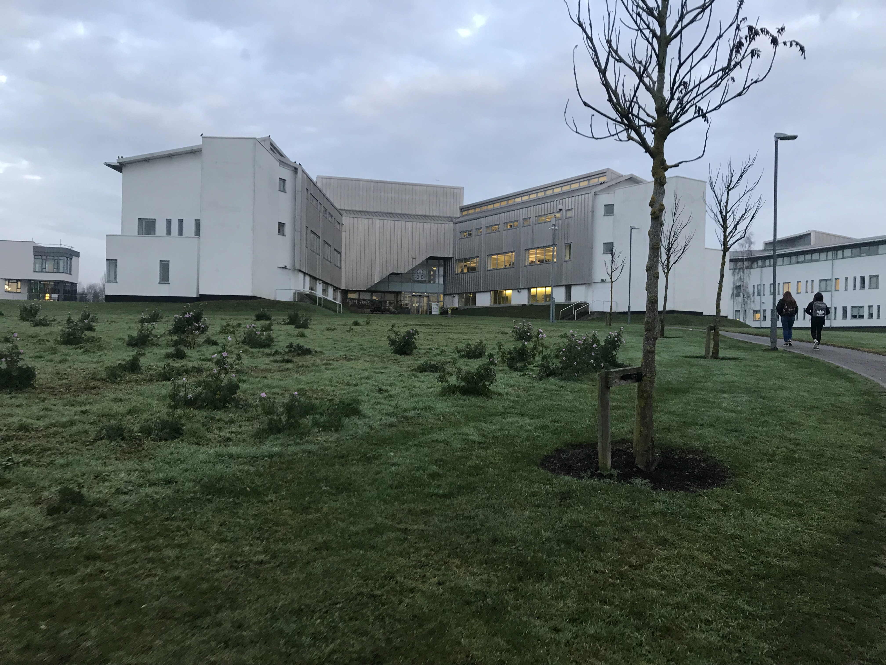
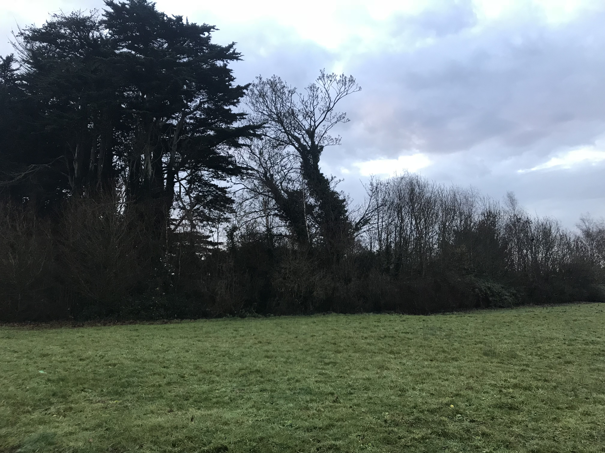

ITB without most of us knowing is rich in nature and an abundance of wildlife. The campus is home to many species of fauna and differnt types of flora.

As you arrive in Itb there is an artificial pond that is striking and is also beneficial to the ecosystem. This pond habitats different animals including a beautiful family of swan, ducks and a stork that can be seen from time to time. This pond provides food to the animals and acts as a flood plain. The pond is also rich in nutrients the soil is rich and fertile and thriving with aquatic life. The pond is rich in sediment which unfortunately is factor of pollution.
 
All throughout the campus you will see greenery from grass to tree’s bushes and many more. The campus is surrounded by different types of trees including elder sycamore elm and the most popular ash. The oldest tree on campus is over 40 years old which means it was here 20 years before Itb was built.There is a gorgeous cluster of trees a grove located near Dblock which is home to an assortment of trees and bushes and also is home to many birds including robins and blackbirds. There is also a mixture of berry trees and bushes that grow here.


The grassland around ITB is huge it is over 22 hectares. Grassland stores carbon which can improve soil structure and is beneficial for animal wildlife. Grassland naturally transitions into scrubland. Seeds will always naturally seed. Grassland provides a habitat for rabbit’s mice and foxes that can be seen at times throughout the grounds around surrounding the campus. There are many different plat species that are important to invertebrate’s Greater knapweed support 16 varieties of butterflies, however wild grasses and herbage are required to support the caterpillar stage.


There is a scrubland that is a Green Oasis - Marginal lands provide shelter and food The Bramble shrub supports Blackbirds, thrushes, chaffinches, starlings, robins, foxes, mice and other small mammals eat the fruits. This provides a Cover for foxes. Flowers from May to September, and fruits from August to October.